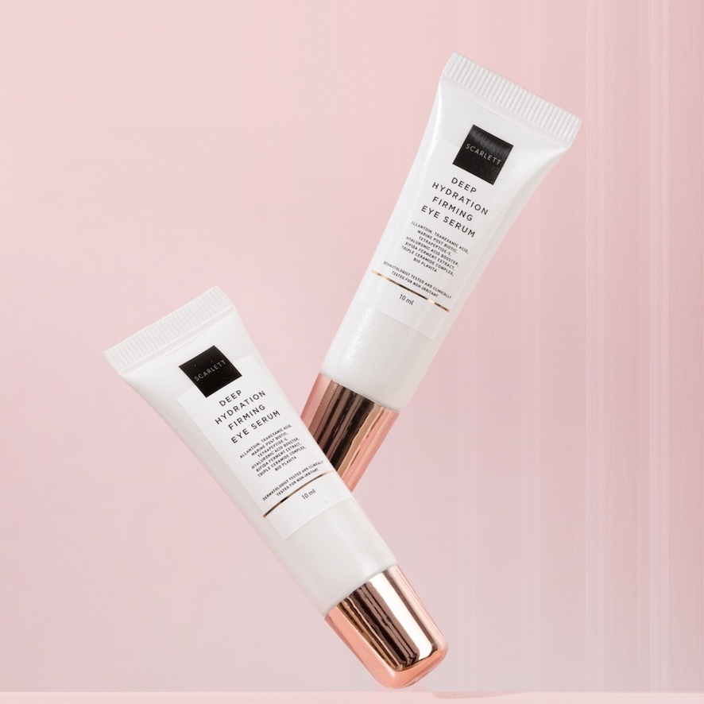
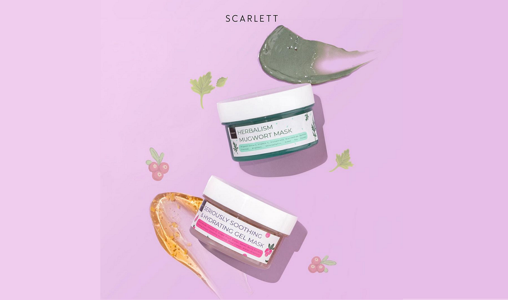

Scarlett merupakan brand kecantikan produk lokal Indonesia yang didirikan oleh publik figur ternama di Indonesia bernama Felicya Angelista tahun 2017. Scarlett Whitening by Felicya Angelista merupakan produk kecantikan yang dapat mencerahkan kulit karena mengandung Glutathione dan Vitamin E yang sangat bagus untuk membuat kulit lebih cerah. Selain itu Scarlett Whitening juga sudah memiliki sertifikasi BPOM yang berarti semua produk Scarlett Whitening sudah teruji klinis sehingga tidak akan membahayakan kulit pengguna.
Scarlett Whitening ditunjuk oleh Kementrian Pariwisata dan Ekonomi Kreatif dan DEKRAFS untuk menjadi Official Beauty Partner GEKRAFS Paris Fashion Show at Paris Fashion Week 2022. Dibawah tema Beauty of Scarlett, Scarlett bertujuan untuk mendorong setiap orang untuk konsisten percaya diri karena setiap orang memiliki keunikan dan daya tarik tersendiri.
Felicya Angelista selaku pemilik menetapkan seluruh produk Scarlett Whitening hanya dengan satu harga yakni Rp.75.000 untuk satu item produk. Beberapa produk Scarlett Whitening yang telah dipasarkan saat ini yaitu untuk perawatan rambut meliputi Yordanian Sea Salt Shampoo dan Conditioner, untuk perawatan kulit badan meliputi Body Scrub, Shower Scrub, Body Lotion, sedangkan untuk perawatan kulit wajah seperti Face Wash, Toner, Serum serta Day dan Night Cream.
Pembelian Produk Scarlett Whitening pada beberapa E-Commerce berikut :
Memberikan kelembapan ekstra pada area kulit yang kering dan menghaluskan area kasar seperti siku, lutut, kaki, dan tangan.
Merawat elastisitas kulit.
Varian Body Cream :
Happy
Jolly
Charming
Body Lotion
Manfaat Body Lotion :
Karena terdapat kandungan Glutathione (Mother of Antioxidant) dan Vitamin E yang sangat bagus dan efektif untuk membantu merawat kulit tubuh di dalam Scarlett Whitening Body Lotion Charming, maka penggunaan secara rutin dapat membantu menutrisi, melembabkan serta mencerahkan kulit tubuh secara lebih maksimal.
Varian Body Lotion :
Romansa
Fantasia
Freshy
Jolly
Charming
Happy
Body Scrub
Manfaat Body Scrub :
Memaksimalkan proses regenarasi kulit karena terdapat kandungan Glutathione (Mother of Antioxidant), Vitamin E dan buliran scrub halus yang bagus untuk meregenerasi, melembabkan serta mencerahkan kulit tubuh secara lebih maksimal.
Varian Body Scrub :
Jolly
Happy
Coffe
Charming
Pomegrante
Romansa
Body Serum
Manfaat Fragrance Body Serum :
Mencerahkan, meratakan warna kulit dan mampu menyamarkan hiperpigmentasi.
Merawat kekencangan kulit dan keremajaan kulit.
Varian Body Serum :
Happy
Jolly
Charming
Shower Scrub
Manfaat Shower Scrub :
Membantu meregenerasi, melembabkan serta mencerahkan kulit tubuh secara lebih maksimal.
Varian Shower Scrub :
Pomegrante
Mango
Cucumber
Coffe
Charming
Jolly
Freshy
FACE CARE
Eye Serum

Manfaat Eye Serum :
Membantu menyamarkan tampilan garis halus serta kerutan dan membantu menyamarkan lingkaran hitam di area sekitar mata.
Membantu merawat elastisitas kulit area mata.
Membantu menjaga kelembapan kulit sekitar mata.
Membantu merawat skin barrier.
Face Mask

Manfaat Mugwort Mask :
Mugwort Extract mempunyai efek membantu menenangkan kulit.
Vitamin C membantu meningkatkan produksi kolagen.
Glutathione and Niacinamide membantu menyamarkan noda pada kulit dan mencerahkan warna kulit.
Bamboo Charcoal efektif dalam membantu membersihkan kulit.
Allantoin membantu menjaga kelembapan dan kelembutan.
Chlorophyllin and Green Tea Powder sebagai antioksidan yang baik untuk anti-aging.
Manfaat Seriously Soothing & Hydrating Mask :
Niacinamide membantu mencerahkan kulit.
Vitamin C membantu meningkatkan produksi kolagen.
Grape Fruit Water membantu menjaga lapisan luar kulit terhidrasi.
Seven Berry Extract sebagai antioxidant pada kulit untuk membantu melawan radikal bebas yang menyebabkan penuaan dini seperti kerutan, kusam dan warna kulit tidak merata.
Ginseng Extract membantu menyamarkan kerutan secara nyata.
Centella Asiatica Extract merupakan antioksidan yang baik.
Rose Flower Water dapat membantu mengurangi kemerahan dan bengkak pada kulit.
Allantoin membantu menjaga kelembapan dan kelembutan.
Facial Cream
Manfaat Day & Night Brightly Cream :
Meningkatkan kadar hidrasi dan menutrisi kulit sehingga kulit wajah menjadi lebih kelembapan, elastisitas dan glowing.
Manfaat Day & Night Acne Cream :
Melembapkan wajah, menyamarkan tampilan pori-pori, meredakan jerawat yang sedang meradang,dan menyembuhkan jerawat. Kandungan yang terdapat pada Day & Night Cream Scarlett Whitening ini juga cocok bisa digunakan untuk sehari-hari dan formulanya terasa nyaman di kulit.
Facial Essence Toner
Manfaat Brightly Essence Toner :
Mencerahkan kulit.
Menghidrasi dan melembapkan kulit.
Menenangkan kulit dan meredakan peradangan.
Membuat kulit lebih halus dan kenyal.
Manfaat Acne Essence Toner :
Meminimalkan kemerahan pada kulit.
Merawat kulit berjerawat.
Meningkatkan produksi kolagen dan elastisitas kulit.
Mengangkat sel kulit mati Memperhalus kulit.
Facial Serum
Varian Facial Serum :
Glowtening Serum
Acne Serum
Brightly Ever After Serum
Skin Smooting Retinol Serum
Niacinamide 5% Beta Glucan 7 Phyto Extract
Facial Wash
Manfaat Facial Wash :
Mencerahkan kulit wajah dalam seketika.
Mengontrol kadar minyak berlebih diwajah.
Membantu menghilangkan beruntus/jerawat.
Menutrisi kulit wajah.
HAIR CARE
Yordanian Sea Salt-Shampoo & Conditioner
Manfaat Yordanian Sea Salt Shampoo:
Membantu mengurangi kadar minyak berlebih di kulit kepala.
Membantu mengurangi kulit kepala atau ketombe.
Membantu menstimulasi pertumbuhan rambut.
Membantu memperkuat folikel rambut.
Membantu membuat rambut jadi lebih bervolume
Manfaat Yordanian Sea Salt Fragrance Conditioner :
Membantu melembutkan rambut.
Membantu menstimulasi pertumbuhan rambut.
Membantu memperkuat folikel rambut.
Membantu membuat rambut jadi lebih bervolume dan mudah di atur.